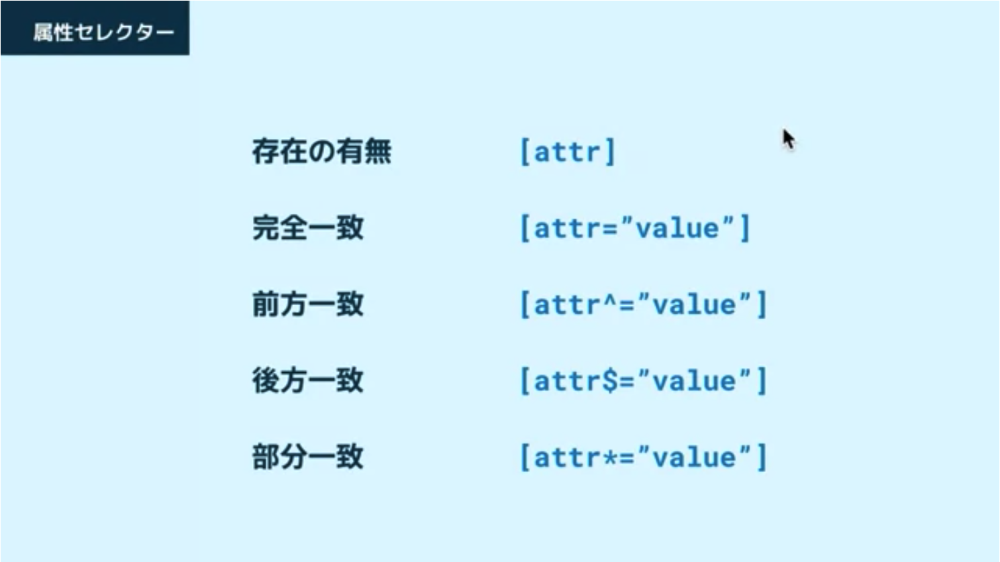

デザインを加えたい要素に指定する
（この場合はh2 に対して color: apua; )
. のあとに class 属性の値を書く。
スペースで区切って複数値を入れることも可能。
class 属性だと h1 をあとで h2 に変更する必要があったとしても、セレクターを修正する必要もない／他の要素にも同じスタイルを付けることができる。
# のあとに id 属性の値を書く。
id 属性には空白を含めてはいけないので、class 属性のように複数の値は指定できない。
id 属性は同じページ内で同じ値を使ってはいけない。
例えば別の要素h1 に同じid属性を付けるといったことはできない。
* を使えばすべての要素に適用される
属性の値に応じて要素を選択するためのセレクターです。
